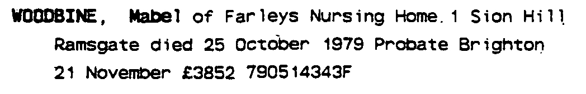

Mabel H Woodbine (née Bennett) 1888 - 1979
[ Home ] | [ Calendar ] | [ Surnames Index ] | [ Errors ] | [ Family History ]A poultry farmer and the 4th of 5 children of Samuel Bennett (a farm servant) and Emma Hougham, Mabel Bennett, the first cousin three-times-removed on the mother's side of Nigel Horne, was born in Bekesbourne, Kent, England on 13 Sept 18881,2. She married Frederick Woodbine (a signalman with the southern railway) in Dover, Kent, England on 2 Sept 19163.
During her life, she was living at Station Road in Bekesbourne on 5 Apr 18914; at Netherton, Sibertswold, Kent on 31 Mar 19015; at 2 Israel Cottages, Wadhurst, East Sussex, England on 29 Sept 19391; and at Farleys Nursing Home, 1 Sion Hill, Ramsgate, Kent in 1979.
She died on 25 Oct 1979 in Thanet, Kent, England2.
Parents
- Samuel was born on 10 Sept 1848
- Emma was born on 19 Jul 1857
Citations
- 1939 Register - Findmypast (was the wife of the head of the household)
- England & Wales deaths 1837-2007 - Findmypast
- England & Wales marriages 1837-2008 - Findmypast
- 1891 England, Wales & Scotland Census - Findmypast (was age 2 and the daughter of the head of the household)
- 1901 England, Wales & Scotland Census - Findmypast (was age 12 and the daughter of the head of the household)
Media
Mabel Bennett - probate

England & Wales births 1837-2006 - BMD/B/1888/4/AZ/000045/136
1891 England, Wales & Scotland Census - GBC/1891/0005727010
1901 England, Wales & Scotland Census Transcription - GBC-1901-0005528266
England & Wales deaths 1837-2007 - BMD/D/1979/4/AZ/001257/078
England & Wales marriages 1837-2008 - BMD/M/1916/3/AZ/000074/137
Kent Banns - GBPRS/M/85008449/2
1939 Register Transcription - TNA-R39-2561-2561A-011-18
1939 Register - TNA/R39/2561/2561A/011/19
Kent marriages and banns - GBPRS/M/84187899/2
Family Tree

Map
Generated by ged2site. Last updated on Jul 3, 2024
Known Issues
Residence record for 1979 contains no citation